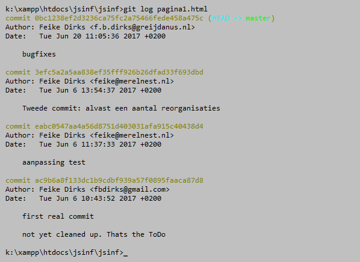
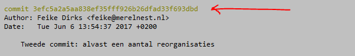

De Log: terug in de geschiedenis..
Versiecontrole systemen hebben vooral nut omdat ze laten zien hoe een project zich ontwikkeld heeft en daarbij de mogelijkheid bieden stappen terug te zetten als een nieuwe ontwikkeling achteraf toch niet blijkt te werken. Ze functioneren hierin als een soort 'UnDo' machine. Iedereen die wel eens aan complexere softwareprojecten heeft gewerkt kent wel die momenten waarop je na een heleboel programmeer geploeter weer even terug wou naar de oude code 'die wel werkte'.
Een belangrijke voorwaarde voor deze functie is dat er regelmatige commits zijn gedaan, want git houdt alleen van de repository de geschiedenis bij. Het is dus geen rare gewoonte om iedere dag of ieder uur dat je aan een project werkt of in ieder geval na iedere functionele mijlpaal een commit te doen.
De geschiedenis van commits bekijk je met behulp van
git loggit log ..filenaam..
We kijken in iets meer detail naar de manier waarop een enkele commit wordt aangeduid:

Naast de rode pijl staat de hash (dus de 'handtekening') van deze commit. Deze hash wordt berekend aan de hand van de inhoud van het totale project na de commit. Een letter veranderen in de code en weer committen zal een totaal andere hash opleveren. Denk aan de MD5 en SHA1 hashing technieken. De kans dat in een groot project twee commits dezelfde hash (handtekening) krijgen is verwaarloosbaar.
Een dergelijk identificatie teken wordt wel een 'ref' genoemd (een 'reference').
Je kunt 'terugkeren' naar een bepaald punt in de commithistorie met behulp van het commando checkout alleen moet je hierbij (een deel van) de hash opgeven:
git checkout ..hash..Op de plek van ..hash.. zet je de eerste 7 tekens van de hash (of natuurlijk de complete hash) van de commit waar je naar terug wilt. Als het Git op basis van die 7 tekens nog niet duidelijk is welke commit je bedoelt hoor je dat vanzelf. Na dit commando bestaat je working directory uit alle files zoals die waren ten tijde van die commit. Wil je weer terug naar de stand van net? Kijk in de historie en doe een volgende checkout met de hash van de een na laatste commit. Dan heb je de toestand weer terug voordat je in het verleden dook. Je raakt dus geen werk kwijt als je terugspringt in de geschiedenis.
Als je terugspringt in de geschiedenis is het vaak een goed idee om van die ontwikkelijn een aparte 'branch' te maken (zie volgende pagina). Daardoor staat die ontwikkellijn dan weer op zichzelf. Je kunt in een later stadium altijd ontwikkellijnen combineren. Daarover later. Het commando om meteen een aparte ontwikkellijn te maken van een stap terug in de geschiedenis is:
git checkout ..hash.. -b ..nieuwe_ontwikkel_lijn..met op de plek van ..nieuwe_ontwikkel_lijn.. de zelfgekozen naam voor die lijn.